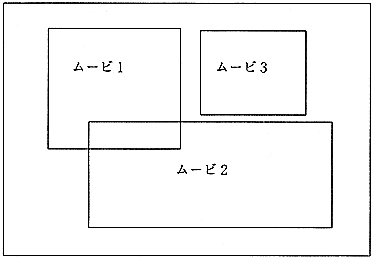

Cinepak for Saturn can play up to 4 movies simultaneously on the screen. Figure 3.4 shows an image of multi-movie playback. To perform a multi-movie, follow the same procedure as creating a normal movie. You can have the sounds on each movie independently and play them simultaneously (or just play the movie you choose and turn down the volume for other sounds), or just one sound. You can also play other movies only with images.
Multi-movie has the following forms.
● Channel interleaving multiple movies on a CD and playing them simultaneously from a CD
● Play movie on memory and movie on CD simultaneously
● Load multiple movies into memory and play them simultaneously

Figure 3.4 Multi-movie playback
Caution
- When interleaving multiple movies on a CD, specify the exact data rate (bit rate) of each movie and interleave (for details, see Refer to the virtual CD manual).
- Please lower the sampling rate (about 11KHz) if each movie has sound.
- Seamless branch cannot be performed from multi-movie playback.